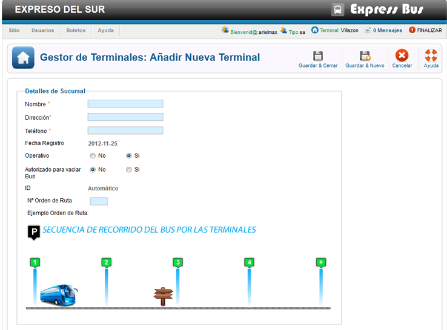

Ayuda Añadir Nueva Terminal
Este sencillo formulario nos permite añadir una nueva terminal al sistema los campos marcados con * son obligatorios, los pasos son muy simples:
En el campo Nombre * colocamos el nombre de la terminal o la ciudad en la que se encuentra.
En el campo Administrador * colocamos el nombre de la persona que se ara cargo de la sucursal, solo puede aver un administrador principal.
En el campo dirección * colocamos la dirección de ubicación de la terminal.
En el campo Teléfono * colocamos el número de teléfono de la terminal.
En la opción Operativo indicamos si la terminal esta lista para el funcionamiento.
En la opción Autorizado para vaciar Bus indicamos si esta terminal esta autorizada o no para vaciar los buses una ves estos llegen a su destino final.
En el campo orden de ruta colocamos en orden de recorrido de la terminal por donde pasara el bus, esto si el bus tiene multiples recorridos.
esta opción se utiliza en las terminales orígen y destino final, en las demas terminales intermedias no se recomienda activar esta opción.